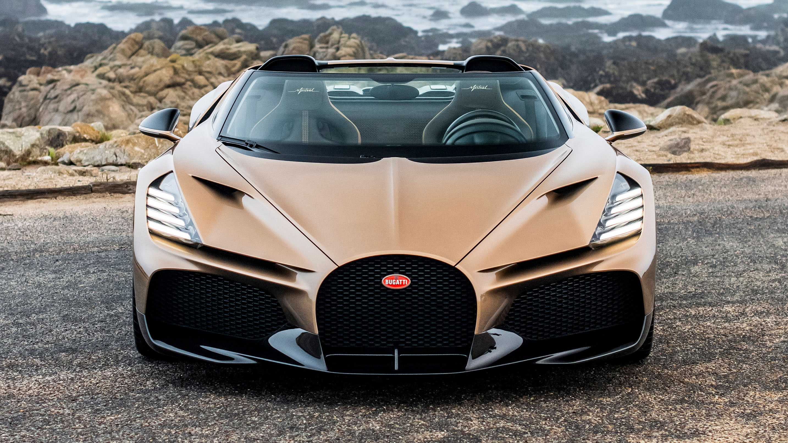
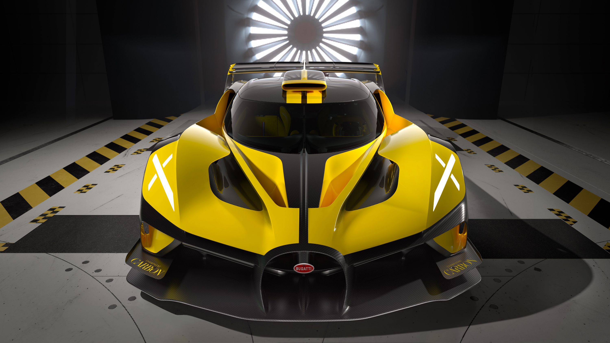
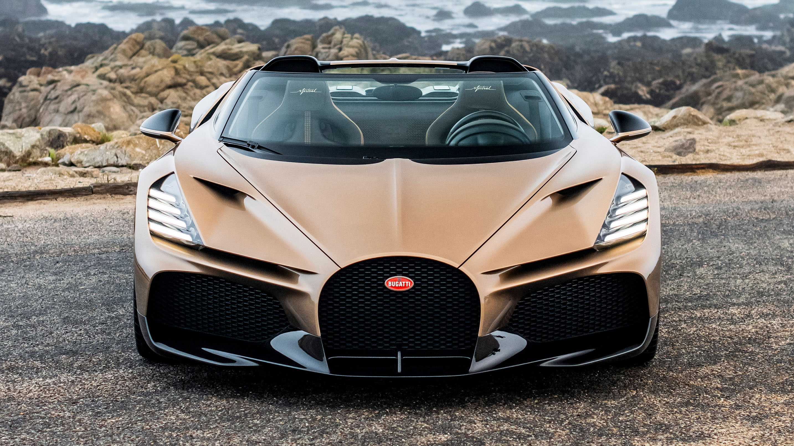
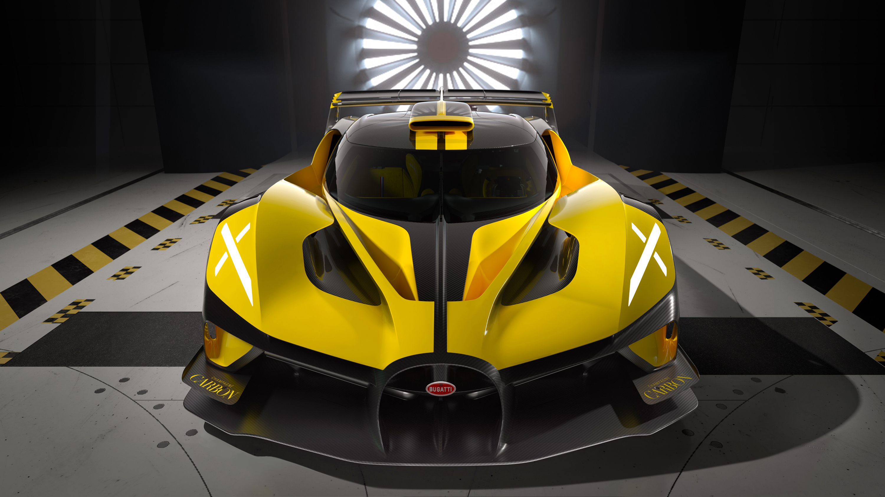

最新車款
NEW
W16 Mistral
這款超級跑車搭載 8.0L 四渦輪 W16 引擎，最大馬力達 1578 匹。作為這款引擎的最後一款車型，它的最高時速預計超過 250 英里每小時，並且具備先進的空氣動力學設計，讓它成為最快的敞篷車之一。
NEW
Bolide
這是一款僅限賽道使用的超跑，依然搭載 8.0L 四渦輪 W16 引擎，最大馬力為 1578 匹，預計能達到 311 英里每小時的最高時速。它的設計重點是輕量化和極致的下壓力，專為賽道性能而生。
這款超級跑車搭載 8.0L 四渦輪 W16 引擎，最大馬力達 1578 匹。作為這款引擎的最後一款車型，它的最高時速預計超過 250 英里每小時，並且具備先進的空氣動力學設計，讓它成為最快的敞篷車之一。
這是一款僅限賽道使用的超跑，依然搭載 8.0L 四渦輪 W16 引擎，最大馬力為 1578 匹，預計能達到 311 英里每小時的最高時速。它的設計重點是輕量化和極致的下壓力，專為賽道性能而生。

Chiron 是 Bugatti 的旗艦跑車，擁有超過 1500 匹馬力，並且能達到超過 260 英里每小時的最高速度。
Veyron 是 Bugatti 的前一代超級跑車，曾是世界上最快的量產車。它搭載 8.0L W16 引擎，最高可達 267 英里每小時的速度。